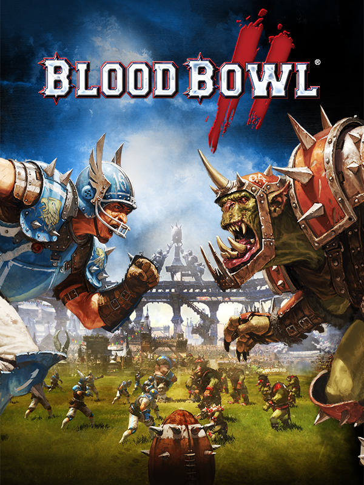

Blood Bowl 2
Blood Bowl 2
Details
|  | |
| Playtime | 3h 53m 0s |
| Last Activity | 2/5/2022 13:35:49 |
| Added | 1/19/2022 22:01:11 |
| Modified | 2/5/2022 13:36:06 |
| Completion Status | Played |
| Library | Steam |
| Source | Steam |
| Platform | PC (Windows) |
| Release Date | 9/22/2015 |
| Community Score | 75 |
| Critic Score | 68 |
| User Score | 46 |
| Genre | Sports Strategy |
| Developer | Cyanide Studio |
| Publisher | Focus Home Interactive |
| Feature | Multiplayer Single Player |
| Links | PCGamingWiki Official site GOG Database HowLongToBeat IGDB IsThereAnyDeal ProtonDB SteamDB MobyGames Wikipedia WineHQ WSGF |
| Tag | |
Description
TOUCHDOWN!
Blood Bowl 2 smashes Warhammer and American football together, in an explosive cocktail of turn-based strategy, humour and brutality, adapted from Games Workshop’s famous boardgame.
Blood Bowl 2’s new graphics engine and high-flying realization makes for a faithful portrayal of the fury and intensity of classic Blood Bowl matches. The solo game mode will have you lead the famous Reikland Reavers. Former star team of Blood Bowl you are tasked with bringing them back to glory, following a full story campaign supported by the hilarious commentators Jim & Bob from Cabalvision. Each match of the campaign is unique, with unexpected and surprising events constantly renewing the experience!
The multiplayer modes are bigger and richer than ever. In the persistent online mode, create and manage your own team comprised of one of eight races from the Warhammer world – Humans, Orcs, Dwarfs, Skaven, High Elves, Dark Elves, Chaos, and the Bretonnia newcomers. You will develop your team, gaining XP and unlocking new skills. But beware! On the pitch, all losses are permanent... Organize entirely customisable championships, from qualifications to finale, and use the new Transfer Market to buy and sell your players, and build your Blood Bowl dream-team!
The next generation of Blood Bowl touches down today, will YOU be the champion?
Blood Bowl 2 smashes Warhammer and American football together, in an explosive cocktail of turn-based strategy, humour and brutality, adapted from Games Workshop’s famous boardgame.
Blood Bowl 2’s new graphics engine and high-flying realization makes for a faithful portrayal of the fury and intensity of classic Blood Bowl matches. The solo game mode will have you lead the famous Reikland Reavers. Former star team of Blood Bowl you are tasked with bringing them back to glory, following a full story campaign supported by the hilarious commentators Jim & Bob from Cabalvision. Each match of the campaign is unique, with unexpected and surprising events constantly renewing the experience!
The multiplayer modes are bigger and richer than ever. In the persistent online mode, create and manage your own team comprised of one of eight races from the Warhammer world – Humans, Orcs, Dwarfs, Skaven, High Elves, Dark Elves, Chaos, and the Bretonnia newcomers. You will develop your team, gaining XP and unlocking new skills. But beware! On the pitch, all losses are permanent... Organize entirely customisable championships, from qualifications to finale, and use the new Transfer Market to buy and sell your players, and build your Blood Bowl dream-team!
The next generation of Blood Bowl touches down today, will YOU be the champion?